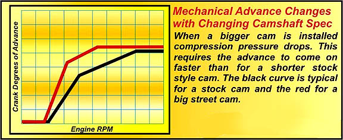
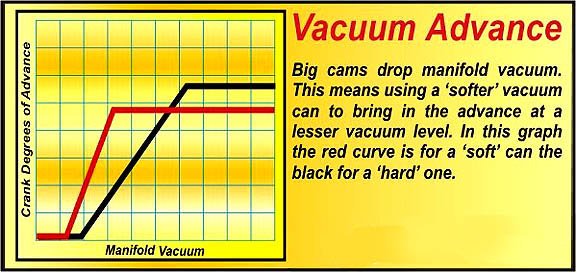

Introduction by: David Vizard |
This article is about advance curves and HEI style Distributors. As such I would have to say that Steve Davis, the boss at Performance Distributors, is one of the most knowledgeable people in the country on this subject. Personally I have counted on a Performance Distributor to get the job done, without any drama, for so many article project engines that I have truly lost count. One of the painfully few advantages of getting old is that you get to see who’s product performs consistently well over the years – and whose does not. On that score it’s worth throwing in a few words about Performance Distributors to put things into prospective.
Performance Distributors was started about 1974 by Steve’s dad, Kelly Davis. I met Kelly and Steve first in 1980 when I was on a visit to Memphis to see the guys at Comp Cams and RHS. Kelly was good enough to spend time showing me the ropes so to speak as far as HEI distributors went although that is far from all the types they handle. At the time I was so heavy into small block Chevy’s that the HEI was all I was interested in. Kelly dialed me in to the HEI’s short comings as a high rpm race orientated ignition system.
It could be argued that any shortcomings in an ignition system would be a turn off for duty as a race unit but the basic premise of a one wire hook-up had me well and truly hooked-up on HEI’s even this far back. Here I thought it was the ultimate in simplicity – now if we can make this go the distance rpm wise life as a small block Chevy builder would suddenly get simpler – at least in the spark department. Well Kelly assured me he had the answers to the problems so later on that year I tried a Performance Distributor in one of my project engines which I believe, appeared in Super Chevy magazine.
I gave Kelly the engine spec so he could build a suitable set of advance characteristics for both the centrifugal and vacuum advance. Although Performance Distributors was in Memphis and I was in California I figured I could do what ever fine tuning was needed at my shop once the engine was on the dyno. I was pleasantly surprised to find that for this hot street motor the advance curves were about as close as can be had as any change in timing anywhere in the rpm range from 2200 to 6500 resulted in a drop in output. Since those days I have relied on spark power from Performance Distributors for some 50 or more project engines. Just a small sample of these from just the last 8 years are scattered throughout this feature. The sheer number should be a clear indication of the confidence I have in this company’s products.
It’s now 28 years later and Kelly is no longer with us – passing in 2000. Steve now runs the company with his mom Pat doing as she has done for many years, organizing trade shows handling company personnel and accounts payable.
Although no longer with us the legacy of Kelly’s original work and later (from 85 on) Steve and Kelly’s joint efforts is still very much evident. I tend to think of Performance Distributors in terms of HEI’s because I just love those systems - but that’s far from the whole picture here. Performance Distributors is in the spark generation business in very much a heavy duty fashion and as such has developed a variety of ignition systems and support equipment such as alternators and batteries for race and high performance applications. They obviously cover the big three domestic brands but they also cover popular imports, sport compacts and various others.
What have I learned from my 28 years experience dealing with this family business? Other than polite courteous service and timely delivery they have totally satisfied the ignition needs of all of my project engines without one single hassle or failure of any kind. In short all the units I have had from Performance Distributors have done exactly what they were supposed to do. I wish I could say the same about all the companies whose parts I have tested or had to work with – but unfortunately life does not work that way!
Spark Advance Strategies By Steve Davis |
I thought hard about an opening sentence here and decided that in this day and age it’s not just power we are looking for, as fuel efficiency is taking an even footing. Let me tell you, this story is as much about mileage as it is about power, from 200 mph Cup Cars to street cars.
The whole concept of ignition advance is centered on charge burn time and burn time can be broken down into two categories. These are ignition delay and the bulk burn rate. The goal we are trying to achieve is to get peak cylinder pressure to occur at about 15 degrees past TDC on the power stroke. If we make that goal then the three main issues of torque, hp and fuel economy will, from the ignition stand point at least, be maximized. What we are not trying to do is run as much advance as possible. I throw that in because in the past I have read features by even some quite well known tech writers that certain mods allowed the engine builder to pile in more advance as if advance was, in itself, good for more output. That’s not the case! If an engine needs a lot of advance to make it’s best output, then that could be a sign of a problem rather than an acceptable solution. In a healthy, well spec'd engine, you should run the minimum amount of advance to get the job done. Any more and negative scenario’s will, sooner or later, start to play out. Since so many factors affect the overall speed of combustion, let’s start at square one and look at these before we get into what an engine may need in terms of advance curves and the like.
Ignition Delay.
There are essentially two components that make up the burn time as a whole. These are ignition delay and the bulk burn rate. Ignition delay is the time between the delivery of the spark into the charge and the point where an identifiable flame kernel can (if the means to do so exists) be seen. During this phase there is no cylinder pressure rise due to any combustion, as this event involves only a miniscule amount of the charge mass to be burned. The delay time varies from one fuel to another and can be anything from about 4 degrees to as much as 12 degrees of crank rotation.
The biggest difference I see is the delay time between leaded race fuels and non-leaded fuels, race or otherwise. Although not universally so, you can usually count on a leaded race fuels needing about 4 to as much as 6 degrees more timing anywhere in the operating envelope of the engine. The longer delay time of a hard core race fuel is not dependant on the octane as it is the lead content. Remember adding enough Tetra-ethyl-lead (TEL) can boost an 87 octane fuel to 100 but such a fuel will usually need far more advance for optimum results than will a non-leaded 100 race fuel.
Between various brands of service station pump fuels the delay rate changes little so there is little need to jump in under the hood and retime the ignition accordingly. The same cannot be said if you make the change from unleaded to leaded fuels. If such a change is made a re-evaluation of the entire timing envelope will be needed. The most critical area of operation here will be the total timing under Wide Open Throttle (WOT) operation. For most practical purposes the only move necessary will be to adjust the initial timing so that the whole envelope is moved forward or back as required.
Although the ignition delay is a characteristic of the fuel it is affected by what’s going on in the cylinder and the spark energy, temperature and duration. This is a complex area and I don’t claim to have all the answers but there again, unless I’m seriously delusional, no one else does either. Here’s my take on it at the present time. At part throttle low rpm operation increasing spark energy, temperature and duration all seem to reduce ignition delay time. Just how much they do so appears to depend on the starting conditions. High mixture turbulence and optimal fuel atomization/vaporization almost always means the charge is easier to light off where as a poor quality air/fuel mix with little mixture motion is not. In the first instance spark energy and temperature play a role toward a quicker light off, but spark duration, for the most part, seems less important. In the second instance where the ignition has to overcome inadequacies in the mixture preparation, spark duration can play a more significant role where longer is better.
Bulk Burn Rates.
Notice I am using the term ‘burn rates’. That’s with good reason as the charge does not explode as is so often implied. On the other hand detonation is an explosion and that can wreak havoc on an engines internals. Detonation occurs when a combination of temperature and pressure brought about by the charge so far burned, causes the remaining unburned charge to spontaneously ignite. The sudden heat release and the extreme rise in cylinder pressure will quickly destroy the pistons. I may as well blow another myth here while I am at it – detonation does not occur when two flame fronts collide. Here is a short description of what happens when two approaching flame fronts meet – next to nothing! Detonation is in fact a complex event but normal combustion is probably even more so. If you want to visually see, in step-by-step fashion, how combustion progresses, check out the illustrations in David Vizard’s article at Turbulence and Combustion Dynamics.
Three primary factors affect the rate of burn within the cylinder. These, in the general order of descending influence, are Pressure, Temperature and Mixture Motion (or PTMM). A charge at low pressure, temperature and with zero mixture motion, burns at little more than a walking pace. That’s hardly fast enough to allow us to turn a motor over at idle let alone 9,000 rpm. By increasing the pressure, temperature and mixture motion at the time of combustion the speed at which the flame front progresses can be increased dramatically. The peak speed of flame progression in a Sprint Cup car engine at 9000 rpm is well over 200 mph. Getting the charge burned too good effect means having about 90% of it burned in little under one thousandth of a second. Since the time scales are so small it should be evident that there is even less margin of error for any errors in timing.

Mechanical Advance
There are two types of advance – vacuum is one and rpm related advance (usually referred to as mechanical) being the other. Let’s talk mechanical advance first.
What the engine needs in the way of advance is solely dependant on the PTMM factors just mentioned. In practice we find that at low speed there is time to get the charge burn going such as to achieve peak pressure at about 15 degrees after TDC. But as rpm goes up, the time to get the burn process done in time, gets less. To compensate here we need to advance the ignition as the rpm goes up. Countering this, and speeding up the burn rate, is the fact that mixture motion increases as rpm increases. Also, especially when a bigger cam is used, cylinder filling and hence compression pressure will increase until the breathing capacity of the induction system is reached. On a power curve you can see approximately where this happens as it closely coincides with peak torque. So with an increasing rpm we need to put in more advance but as the mixture motion and the compression pressures come into play so the burn rate speeds up thus cutting the amount of advance required. At first RPM wins out, but as the engine gets to 3000-4000 rpm we find the pressure and agitation of the charge speeds up the burn at just the rate to counter the effects of increasing rpm. At this point the timing can be fixed from there on up. What this means is, at first the timing needs to advance with increasing rpm but as the rpm goes up so the amount of extra timing drops off until the engine reaches a point where no additional timing is needed from that point on up. The maximum timing needed by an engine is commonly called the ‘total timing’.
The biggest factor affecting the required advance curve in the distributor is the camshaft. The longer the duration the lower the cylinder pressure is at lower rpm. When swapping out a stock cam for a bigger cam we find that the advance needs to come on sooner and faster. The next factor to consider when determining what curve is likely to be needed is the compression ratio. When the compression goes up the compression pressure at the end of the compression stroke is higher so the rate at which the advance needs to come on goes down. In other words it works around the other way to the effect a bigger cam has.
Just for the record when a bigger cam is installed in a normally aspirated engine, the compression ratio should be increased to get best results. By having a better match of CR to cam duration the loss of low speed output from a bigger cam is almost negated until cams of over about 280 or so advertised degrees are involved. In other words pairing off compression and a bigger cam means more top end without loss of bottom end. For the amount the compression would be typically raise though, the effect of the bigger cam will still be the principle control factor.
The key toward making a big cammed motor run sweeter under low rpm WOT conditions is to have the timing advance curve that the new parts combo really wants. But that’s far from the whole story. The fact of the matter is, that by adding a vacuum advance function to the distributor it is possible to run a cam of at least 5 degrees more duration before idle quality drops below a certain limit. That extra 5 degrees of duration can easily mean 10 extra horses. Since it is a power factor let’s look at vacuum advance in a little more detail.
Vacuum Advance.
Neither the canister on the distributor nor the MAP sensor, if you have an EFI engine, is there for decoration. Too many street rodders see that the pro racers use distributors without vacuum advance and figure if it’s good for the winning car it’s good for them. Unfortunately this is not so. Although a drag race car may not realize much in the way of an advantage, none of it performance related, it’s about the only type of race car that falls into this category. Here’s how the puzzle fits together.
When you back out of the throttle the manifold vacuum goes up. This means the compression pressure at the end of the compression stroke is way lower. When a spark timed for a normally fast burning charge (as it is at WOT) fires under these circumstances it is going to occur far too late for the pressure to be at it’s peak at 15 degrees after TDC. This means that less than optimal use of the energy content of the fuel has been made. That in turn means burning more fuel to get the level of power being demanded by the driver at that particular moment. By having vacuum advance pull in appropriately more timing you can let out of the throttle more and consequently cruise on less fuel.
Also you may have based a cam selection on the basis of minimal negative idle impact. This may have limited your choice of cam to one of say a 280 degrees (advertised). If this was to be paired with a distributor with no vacuum advanced as most competition ones are then rest assured you have probably given away about 10-15 hp. If a vacuum advance is used the ignition timing at idle can be optimized where-as without vacuum advance it cannot. Assuming a realist street engine idle speed a ‘mechanical advance only’ distributor is barley pulling in any advance. What with say 12 degrees of initial and at most 5 degrees mechanical the total timing at idle would be only 17 degrees. In practice we find that a big cammed V8 needs about 50 degrees for best idle along with the lowest idle fuel consumption. I have seen some engines require as much as 55 degrees yet these engines – with cams as big as 260 to 270 degrees at 0.050, would idle tolerably well at 1000 rpm – sometimes less. The same goes for cruise. The vacuum advance can pull in the desired advance which at about 2500 rpm and a quarter throttles can be as much as 50 degrees. Normally an engine with mechanical advance only would have no more then about 25 to 30 degrees max. It does not take a diploma in rocket science to see that cruise fuel consumption is going to be much higher with the timing as much as 25 degrees out!
So where am I going with all this talk of vacuum cans and the like? Simple, if you want your street/strip car to return of it’s best in mileage then best you order your distributor with a vacuum advance can. Not only are you likely to get in the order of 2- 4 more mpg from a typical hopped up Detroit V8 not so equipped but also the motor will idle far smoother and have less tendency to foul up plugs. This is because it will idle on a leaner mixture so there is less overly wet charge passing through the system.
This brings up the subject of ported vacuum versus manifold vacuum. Ported vacuum is sourced just above the carb butterflies. At idle there is no vacuum signal to the distributor so no vacuum advance is pulled in. This means at idle the timing is way retarded over what is otherwise needed. It is only when the throttle is opened slightly that the butterfly goes past the vacuum port. At this point the port is now connected to manifold vacuum and advance is pulled in.
Manifold vacuum taps into the intake manifold below the carb throttle plates so actually sees manifold vacuum. If you are looking for the best idle it’s manifold vacuum all the way. The ported vacuum was a means toward cleaning up emissions at idle. By having the engine demand more air (and consequently more fuel) at idle the hydrocarbon parts per million could be reduced. To get the idle speed down the timing used was retarded in as much as no idle vacuum advance was present.
For you circle track racers here is something I want you to think about. If your car’s engine had vacuum advance it would get about 20% more mileage on the yellow flag laps. Just how many times have we seen a lead car run out of fuel with just half a lap to go?
In the business, vacuum cans are often designated ‘hard’ or ‘soft’. For most street applications where the cam is short and the amount of manifold vacuum seen is about 12 to as much as 20 inches of mercury, we find that the vacuum needs to start coming in at about 5 - 7 inches or so and pull in about 15 to as much as 20 degrees of advance by the time the vacuum has reached 12 -15 inches.

For an engine with a racier cam the can needs to be soft and advance needs to start almost as soon as any vacuum is seen. This is not always practical from the hardware standpoint but for a big cammed engine we will typically use a can that comes in at 5 inches and pulls in 15 or more degrees by the time 10 inches of vacuum is seen.
Hopefully this primer on advance curves has answered some of your questions. Down the road we will look at other aspects of ignition which contribute to more power and better mileage. However do not loose sight of the fact that your first goal is to have the spark occur at the correct moment for all engine operating conditions.
Written by: Steve Davis and David Vizard, originally posted on GoFastNews.com
|